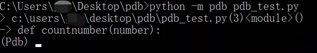
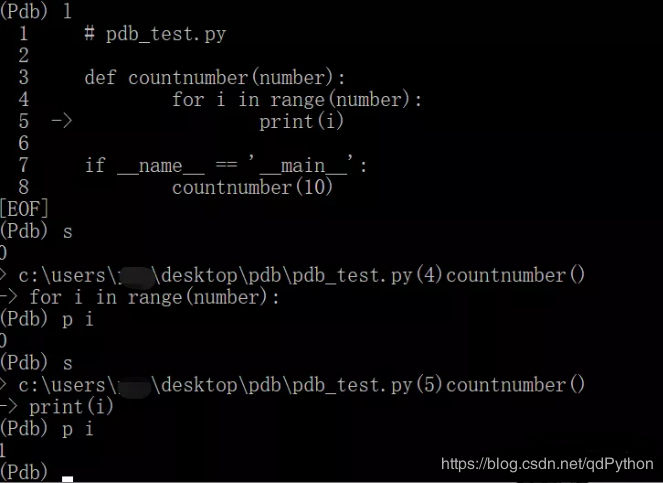
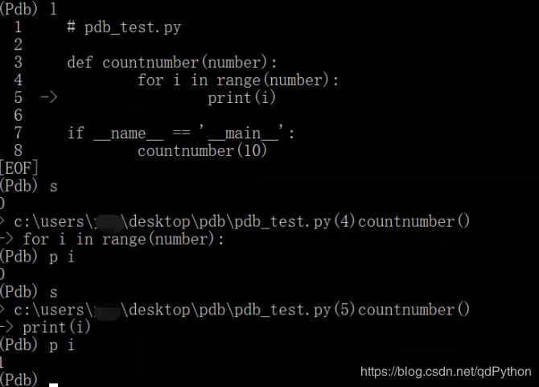
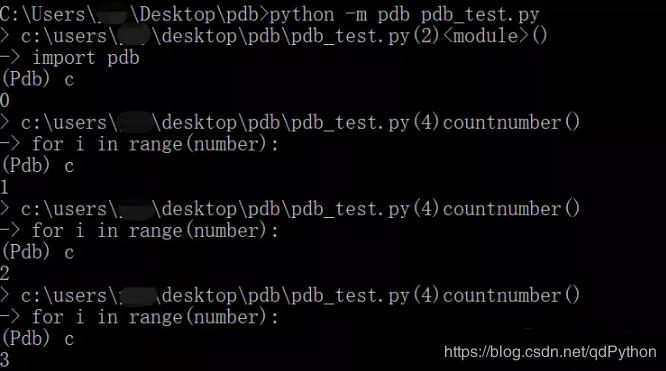
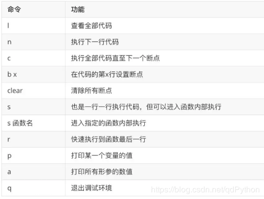
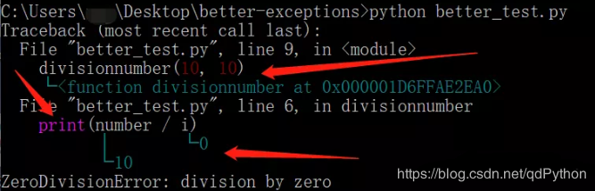
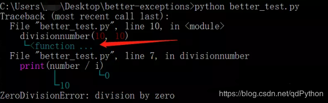
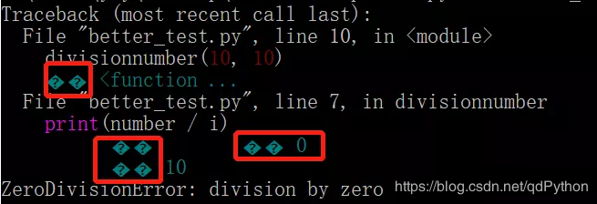
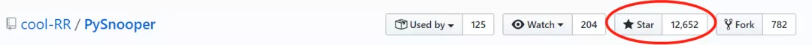

调试是开发过程中不可避免的一个环节，在Python中我们使用print、logging、assert等方法进行调试既简单又实用，但毕竟有其局限性。今天这篇文章为大家带来三个工具，其中有Python的内置模块也有第三方库，它们提供了调试代码所需的大部分常用功能，将极大的提升我们的开发和bug排除效率。
1.PDB
pdb是Python中的一个内置模块，启用pdb后可以对代码进行断点设置和跟踪调试。为了演示方便，我们准备一个样例程序pdb_test.py：
def countnumber(number):
for i in range(number):
print(i)
if __name__ == '__main__':
countnumber(10)之后在终端中输入python -m pdb pdb_test.py命令，进入pdb的调试模式：

这时我们就可以通过各种命令控制代码执行或者查看当前变量，例如l可以查看所有代码，n是执行下一步代码，p可以查看当前变量等等，需要注意的是命令n只会执行主程序中的代码，如果想要单步执行子函数中的代码，需要使用s指令，调试效果如下：

这时我们就可以通过各种命令控制代码执行或者查看当前变量，例如l可以查看所有代码，n是执行下一步代码，p可以查看当前变量等等，需要注意的是命令n只会执行主程序中的代码，如果想要单步执行子函数中的代码，需要使用s指令，调试效果如下：

可以看到，通过s指令（如果只想在主函数中单步执行可以使用n）和p指令，我们控制程序单步运行并实时查看了相关变量。但是单步执行毕竟是一种效率非常低下的调试方式，尤其当代码量比较大的时候更是噩梦，这时就需要用到pdb的set_trace()方法，我们对样例程序pdb_test.py做一点修改：
import pdb
def countnumber(number):
for i in range(number):
print(i)
pdb.set_trace()
if __name__ == '__main__':
countnumber(10)pdb.set_trace()的作用就是在代码中设置断点，在pdb调试模式下，使用c命令就会直接跳转到下一个断点位置，如果之后没有其他断点就会执行完全部代码，调试效果如下：

除了上面提到的几个指令以外，pdb还有其他一些比较常用的命令（见下表），综合使用基本能够满足日常的调试需求。

2.Better-exceptions
better-exceptions是一个Python第三方库，作者对他的定义是“使异常信息更加美观和详尽”。在正式使用之前先说下这个库的安装：
第一步，使用pip install better_exceptions安装better-exceptions库；
第二步，使用export BETTER_EXCEPTIONS=1(Linux / OSX)或setx BETTER_EXCEPTIONS 1(Windows)设置环境变量。
现在就可以正常使用better-exceptions进行调试了，为了演示效果更加明显，我们对上文中的代码稍作修改作为本次的样例程序better_test.py：
def divisionnumber(number, div):
for i in range(div):
print(number / i)
if __name__ == '__main__':
divisionnumber(10, 10)很明显，上面这段代码在执行过程中会因为分母为0而抛出异常，现在我们执行python better_test.py，看看启用了better-exceptions后的异常信息是什么样子的：

从上面这幅图可以看出better-exceptions对异常信息的修改主要体现在两个方面：
一是对产生异常的代码进行了颜色标注;
二是对产生异常的代码中的相关变量值进行了输出（包括函数等对象）；
这样一来，很多时候我们只需要根据better-exceptions输出的辅助信息就能判断产生异常的位置和原因，而不必像以前一样再次查看源代码并观察运行结果，正如作者所说：Pretty and more helpful。
但是，过多的信息输出也会有问题，那就是当代码层级结构比较复杂的时候，better-exceptions输出的辅助信息可能会非常之多，就比如上面的divisionnumber函数，他所在的地址信息多数时候我们并不关心，为了屏蔽这些“垃圾”信息，我们可以在代码中加一行：
better_exceptions.MAX_LENGTH = XXXXXX是允许显示的最大字符长度，比如这里设置为10，再来运行better_test.py这个程序就会是下面的结果：

可以看到，对函数divisionnumber的注释只显示了最开始的"<function"这几个字符。
除了上面提到的功能之外，better-exceptions还可以和logging还有django无缝接入，这使得它的应用更加灵活，关于这方面内容大家可以查看项目文档。
还有一点需要提醒大家，如果你是在windows下使用，可能会出现下图中的乱码问题，这是由于better-exceptions的内设编码格式所导致的。

解决的办法是在安装后，对better_exceptions目录下的encoding.py文件第10行代码进行如下修改：
# 原代码：
ENCODING = locale.getpreferredencoding()
# 修改为：
ENCODING = 'utf-8'3.PySnooper
PySnooper也是一个Python的第三方库，他的特点是能够精准的显示每条代码的执行顺序、执行时间以及随之带来的局部变量的改变等等。值得一提的是，作为一个发布不满半年的库，PySnooper在github上已经达到了1.2W星，其受欢迎程度可见一斑。

PySnooper的使用可以说是非常的方便，直接在代码中以装饰器的形式调用就可以了。当然在引用前你得使用pip install pysnooper或者conda install -c conda-forge pysnooper安装这个库。我们还是举一个例子来进行演示，样例代码如下：
import pysnooper
import random
@pysnooper.snoop()
def foo():
lst = []
for i in range(10):
lst.append(random.randrange(1, 1000))
lower = min(lst)
upper = max(lst)
mid = (lower + upper) / 2
print(lower, mid, upper)
foo()在上面这段代码中，我们先是生成10个1到1000之间的随机数，然后计算他们之中的最大最小值和中位数，唯一的不同在于第三行多了一条语句@pysnooper.snoop()，我们运行以下代码，发现除了正常的print结果之外，多了许多内容（内容太多，下面只显示一部分）：
19:51:57.704857 call 16 def foo():
19:51:57.705860 line 17 lst = []
New var:....... lst = []
19:51:57.705860 line 18 for i in range(10):
New var:....... i = 0
19:51:57.705860 line 19 lst.append(random.randrange(1, 1000))
Modified var:.. lst = [758]
19:51:57.705860 line 18 for i in range(10):
Modified var:.. i = 1
....................
19:51:57.706818 line 22 upper = max(lst)
New var:....... upper = 927
19:51:57.706818 line 23 mid = (lower + upper) / 2
New var:....... mid = 552.0
19:51:57.706818 line 24 print(lower, mid, upper)
19:51:57.706818 return 24 print(lower, mid, upper)
Return value:.. None这都是PySnooper跟踪监控的结果，正如上面所说，他准确记录的每条代码的运行时间、顺序以及相关的变量值。
作为一个星标1.2W+的项目，PySnooper的功能肯定不会这么简单，@pysnooper.snoop()中是可以接收参数的，比如我们觉得输出内容太多，可以考虑把信息记录到log日志中，这个功能只需要加一个log文件定位参数就能搞定：
@pysnooper.snoop('file.log')@pysnooper.snoop()支持的参数还有很多，分别对应了不同的功能，例如监控自定义表达式、监控底层函数、支持多线程等等，详见项目文档。
此外，pysnooper还支持局部监控，一般来说我们写的代码都比较长，而需要监控的只是其中的一小部分，这时候就可以把需要监控的代码放到一个block里。我们修改下刚才的代码，只对计算最大最小值和中位数的部分进行监控，修改后的代码如下：
import pysnooper
import random
def foo():
lst = []
for i in range(10):
lst.append(random.randrange(1, 1000))
with pysnooper.snoop():
lower = min(lst)
upper = max(lst)
mid = (lower + upper) / 2
print(lower, mid, upper)
foo()运行之后发现监控信息精简了很多：
New var:....... lst = [562, 341, 552, 353, 628, 302, 430, 188, 955, 108]
New var:....... i = 9
20:02:47.359272 line 21 lower = min(lst)
New var:....... lower = 108
20:02:47.359272 line 22 upper = max(lst)
New var:....... upper = 955
20:02:47.360269 line 23 mid = (lower + upper) / 2使用with pysnooper.snoop()模式依然保留了对各种参数的支持，个人认为这种模式更加符合实践需求。
小结：
今天介绍了三个不借助IDE就能方便使用的调试工具，三个工具的调试思路和适用场景也各不相同，大家可以根据需要灵活选用。不过话说回来，我个人最喜欢的还是PySnooper，你最喜欢哪一款呢？